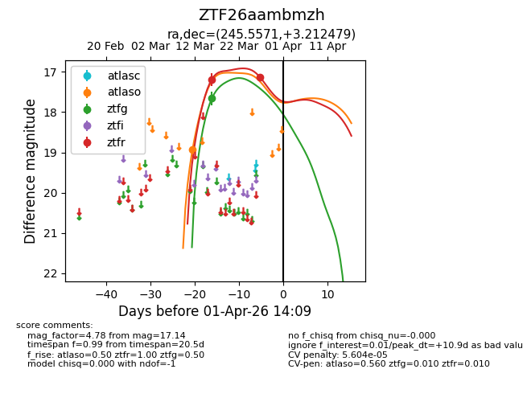
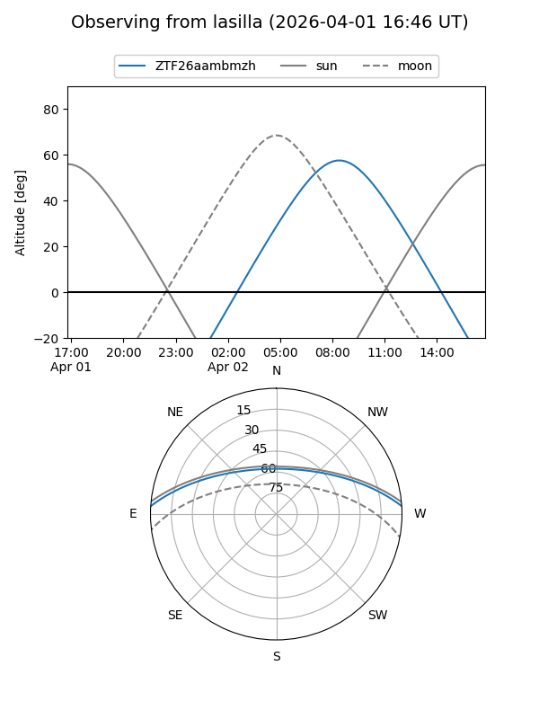
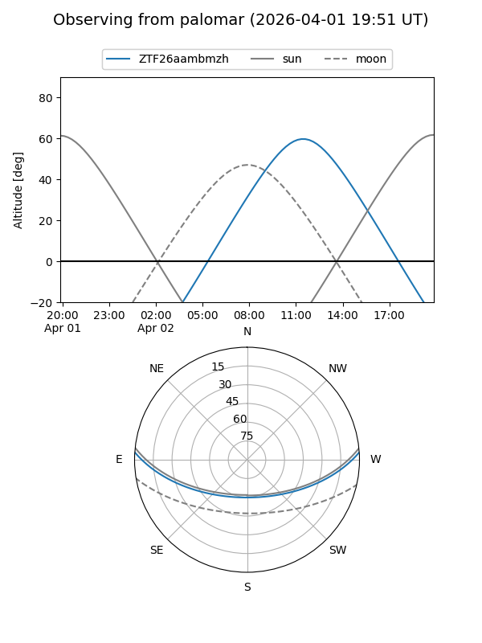
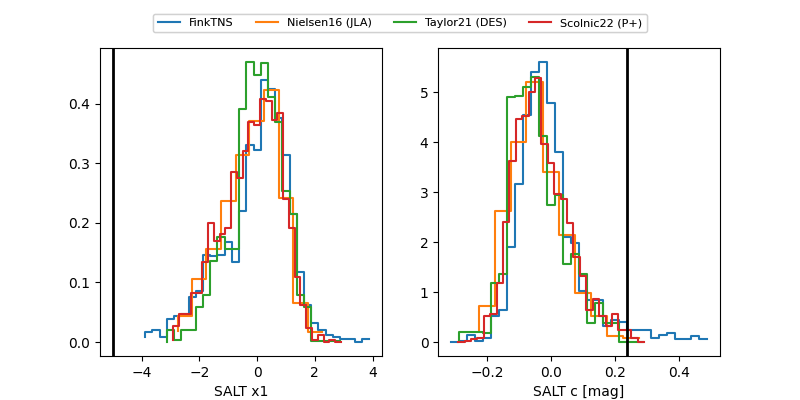

ZTF26aambmzh
Target ZTF26aambmzh at 2026-04-01 14:13
Aliases and brokers:
FINK: link
Lasair: link
ALeRCE: link
alt names
ZTF26aambmzh (ztf,fink_ztf)
Coordinates:
equatorial (ra, dec) = 245.5571,+3.21248
equatorial (HMS+DMS) = 16:22:13.70,+03:12:44.92
galactic (l, b) = (17.0456,+34.33687)
Flags:
likely cv
Photometry:
last atlaso=18.93, ztfg=17.66, ztfr=17.14
1 atlaso, 1 ztfg, 2 ztfr detections
Lightcurve

Visibility


Additional plots
